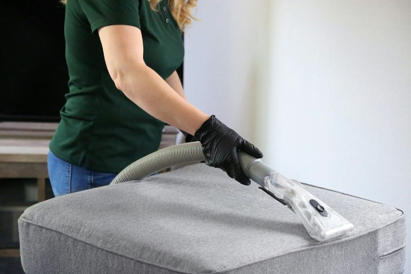
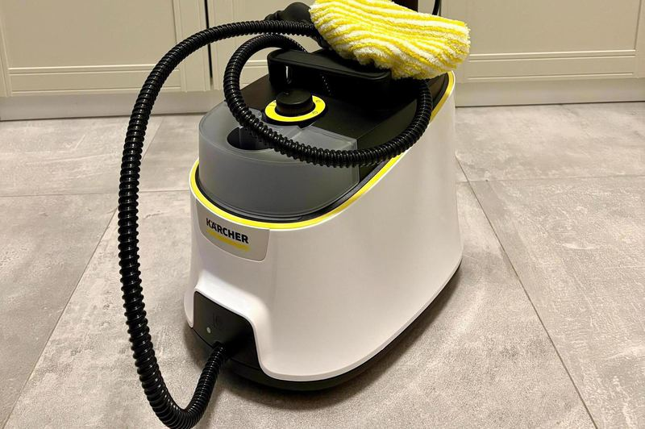
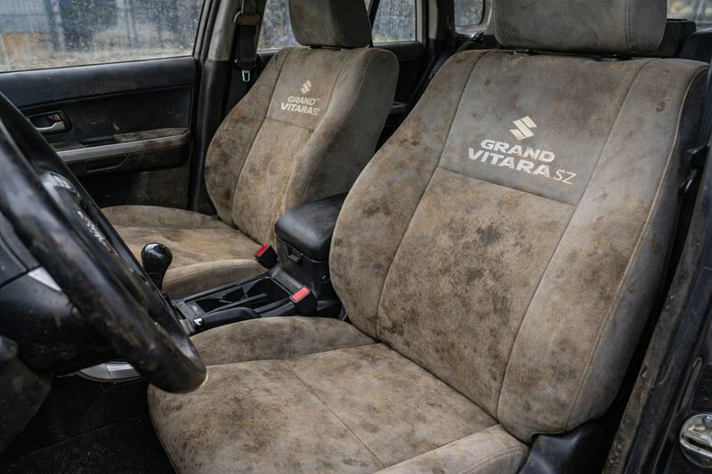
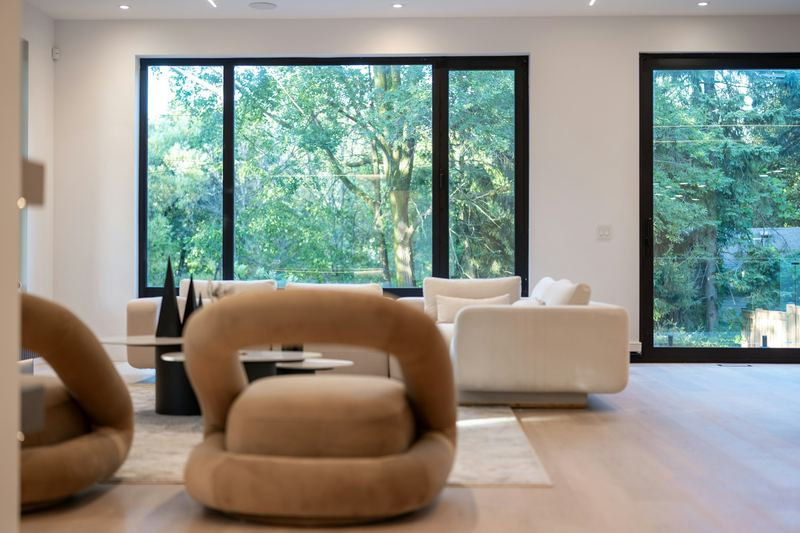

Čalounění
Sedačky, křesla, matrace, židle i koberce. Hloubkově, ne jen povrchově.
Čistímdoma z Frýdku-Místku. Profesionální čištění čalounění, interiérů aut a oken. A když si to chcete udělat sami, půjčíme Vám stroj Kärcher.

Naklikejte, co máte doma nebo v autě. Pošlete nám to jednou zprávou a ozveme se s cenou a termínem.

Chcete si sedačku nebo koberec vyčistit sami? Půjčíme Vám profesionální stroj a ukážeme, jak s ním zacházet.
Půjčit strojSedačky, křesla, matrace, židle i koberce. Hloubkově, ne jen povrchově.

Sedadla, koberečky, strop i kufr.

Okna, rámy a parapety, ať je doma víc světla.
„Veliká spokojenost, objednávám opakovaně, seriózní jednání.“
zákazník na Firmy.cz
„Výborná komunikace, skvěle odvedená práce. Spokojenost, doporučuji.“
zákaznice na Firmy.cz
„Seriózní jednání, skvěle odvedená práce, určitě doporučuji.“
zákaznice na Firmy.cz